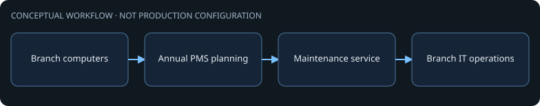

07 / IT operations
Preventive Maintenance.
Recurring computer maintenance across NCR and VisMin branches.
Overview
Coordinated recurring computer maintenance to support reliable branch operations. Planned preventive work helps identify common issues early, maintain equipment and reduce disruption for colleagues who rely on IT every day.
Areas of work
- Recurring computer health checks and maintenance
- Branch coordination across NCR and VisMin
- Issue identification, follow-up and troubleshooting
- User support and operational continuity
